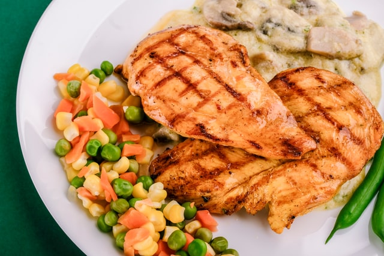

Rich Fudge Cookies

The image isn't really the right thing...
This recipe is another favorite of mine, it's a quick
and easy baked chicken recipe that is very savory.
It's called poppy seed, but I don't use the poppy seeds.
Ingredients
- 2 Cans shredded white chicken
- 1 can cream of chicken
- 1 can cream of mushroom
- 16 oz sour cream
- 1 roll of ritz crackers
Steps
- Combine chicken, cream of chicken, mushroom & sour cream together in a 9 x 15 baking dish
- Mix well
- Crush a 1/4" layer of ritz crackers on top
- Bake at 375 for 30 minutes
- Optional: brown top layer by setting oven to broil for a few minutes. Caution: don't burn them!
- Enjoy!